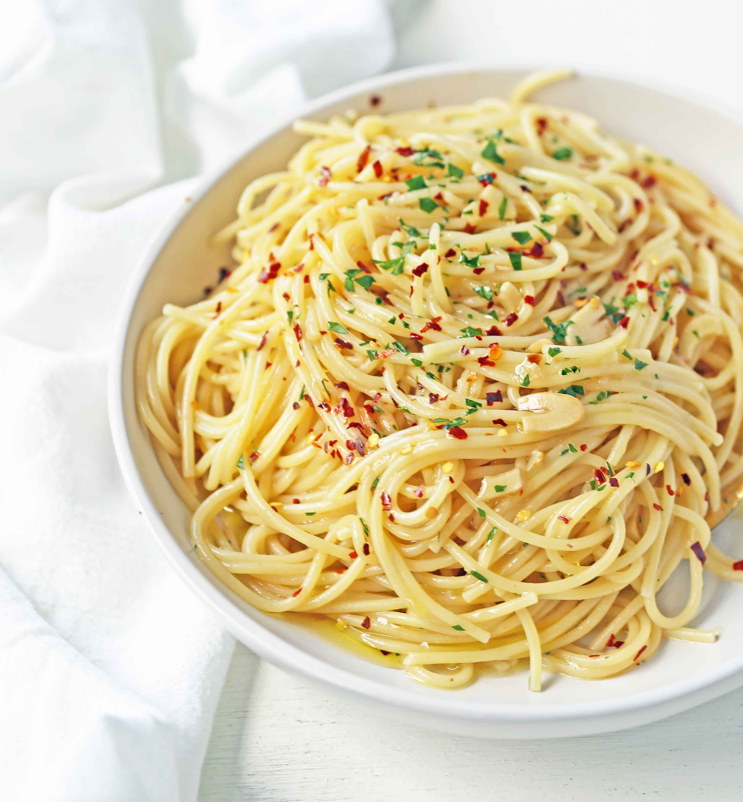

- Spaghetti - 12 ounces (about 340 grams)
- Garlic - 6 cloves, thinly sliced
- Olive oil - 1/2 cup
- Red pepper flakes - 1/2 teaspoon (adjust to taste)
- Salt - to taste
- Fresh parsley - 1/4 cup, chopped
- Parmesan cheese - grated, for serving (optional)
|
- Bring a large pot of salted water to a boil. Add the spaghetti and cook according to package instructions until al dente. Reserve 1/2 cup of pasta water, then drain the spaghetti.
- In a large skillet, heat the olive oil over medium heat. Add the sliced garlic and cook, stirring frequently, until the garlic is golden and fragrant, about 2-3 minutes. Be careful not to burn the garlic.
- Add the red pepper flakes to the skillet and cook for an additional 30 seconds.
- Add the drained spaghetti to the skillet and toss to coat the pasta with the garlic and oil. If the pasta seems dry, add a bit of the reserved pasta water to achieve the desired consistency.
- Remove the skillet from heat and stir in the chopped parsley. Season with salt to taste.
- Serve the spaghetti hot, topped with grated Parmesan cheese if desired.
|

|